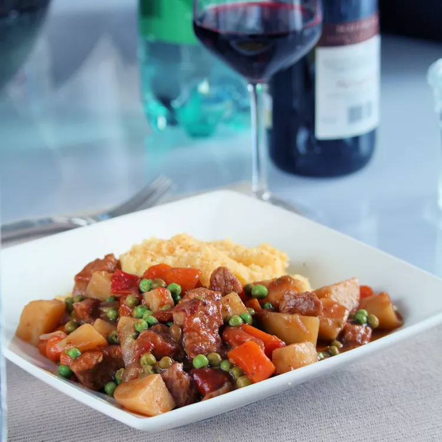

Veal Spezzatino

Description
Veal spezzatino features veal chunks stewed with vegetables until tender and flavorful.
This Italian dish is less soupy than stews from other cuisines. Even though there are potatoes in the recipe,
it is typically served alongside polenta or mashed potatoes. Leftover stew freezes beautifully.
ingredients
- 1 & 1/2 tablespoons cornstarch
- 1 teaspoon paprika
- 1/2 teaspoon coarsely ground black pepper
- 1 & 1/2 pounds lean veal stew meat
- 3 tablespoons extra-virgin olive oil
- 1 onion, minced
- 1 carrot, minced
- 1 celery, minced
- 1 fresh Thai chile pepper, minced
- 1 clove garlic, crushed
- 1/2 cup low-sodium vegetable broth
- 1/4 cup dry white wine
- 4 medium Yukon Gold potatoes, peeled and cut into 1-inch cubes
- 3 Roma tomatoes, cubed
- 1 & 1/2 cups frozen peas
- 1 bay leaf
- 2 tablespoons water, or as needed
Steps
-
Mix together cornstarch, paprika, and pepper in a large bowl.
Pat veal chunks dry and toss them with seasoned cornstarch to coat.
Transfer coated veal chunks to a plate and set aside leftover seasoned cornstarch.
-
Heat olive oil in a Dutch oven over medium-high heat.
Add veal pieces to the pot, one by one, and cook until browned on all sides.
Reduce heat slightly and add onion, carrot, celery, and chile pepper; cook until fragrant, stirring often, about 5 minutes.
Add garlic and cook until fragrant, about 1 minute.
-
Pour in broth and wine. Deglaze the pot using a wooden spoon to scrape any browned bits off the bottom.
Add potatoes, tomatoes, peas, and bay leaf. Stir and cover.
-
Bring to a boil, reduce heat, and simmer until veal is fork-tender, potatoes are cooked, and liquid has thickened, about 1 hour.
Add some water from time to time to keep stew from burning, but don't let it get soupy.
Add leftover seasoned cornstarch if stew needs thickening at the end.